| L'amour en action |
pendant la période des fêtes |
Pour certains, Noël et le Nouvel an sont des jours comme les autres, alors que pour d'autres, ce sont des occasions spéciales, et ils se sentent très tristes s'ils n'ont pas de famille, ou personne pour s'occuper d'eux, ou pour penser à eux ces jours-là. Alors Maître a demandé à tous les centres du monde entier d'envoyer des cadeaux aux sans-abri avant Noël. Nous croyons que nos petits cadeaux n'étaient pas simplement des cadeaux, mais des gestes d'amour de Dieu et de nous-mêmes à partager avec les gens, pour leur faire sentir la chaleur et l'amour, et leur faire ressentir que la vie n'est après tout, pas si horrible. Par ces simples offrandes, les sans-abri pourront trouver le courage de se bâtir un avenir meilleur.
Maître nous rappelle aussi de remercier Dieu d'avoir quelque chose à offrir, d'être en position de donner, parce que ce pourrait être nous qui soyons en position de recevoir, ou n'importe qui, alors nous devons aussi donner en guise de remerciement à Dieu. Elle a dit, " Lorsque vous donnez à des gens dans le besoin, vous voyez la lueur dans leurs yeux, vous voyez la gratitude dans leur coeur, et vous vous sentez très près de Dieu. "
Bien sûr, Maître contribue toujours, la plupart du temps, de façon anonyme, ce qu'Elle peut faire en toute occasion, en tout lieu où le besoin se fait sentir, pas seulement les jours de Noël et du Nouvel an. Mais ces jours particuliers signifient beaucoup pour ceux dans le besoin, alors Elle a demandé à tous les centres de donner durant la période de fêtes, et Elle a donné de l'argent à ceux qui avaient besoin d'une aide supplémentaire pour accomplir ce projet. Une somme totale de 18 761,08 $US a été offerte aux centres suivants qui en avaient fait la demande : Argentine 1 000 $, Chili 500 $, Costa Rica 1 000 $, Hongrie 500 $, Mexique 1 400 $, Népal 500 $, Pérou 3 900 $, Russie 500 $, Johannesburg, Afrique du sud 212,08 $, Floride, États-Unis 4 049 $, Michigan, États-Unis 200 $, San Diego, États-Unis 5 000 $. Tous les autres centres du monde se sont autofinancés pour cette activité.
Vous trouverez ci-dessous quelques rapports d'activité sélectionnés de remise de cadeaux des centres pour la période de fêtes de 1999-2000.
| 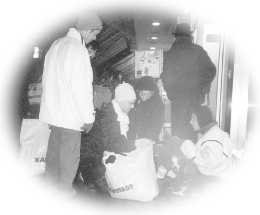 |
Durant la froide saison d'hiver, c'est le moment où les sans-abri font le plus pitié. |
Dans les pays d'Europe du nord, tel que l'Allemagne, les sans-abri sont plus pitoyables durant la saison hivernale. En plus d'endurer le froid et la pauvreté, ils souffrent de solitude et de l'isolement de la grande ville. Parfois ils risquent leur vie dans ce climat de grand froid.
En suivant les charmantes directives de Maître, les amis initiés de Berlin ont préparé des quantités énormes de plats et de vêtements chauds qu'ils ont distribués aux sans-abri, dans les rues, ou dans les stations de métro. Chaque personne a reçu une trousse qui contenait un repas chaud, un sac de couchage de qualité supérieure, des gants, un chapeau, un châle, des chaussettes de laine, et d'autres effets. Avec les bénédictions de Maître, une grande surface très réputée d'Allemagne a offert un rabais de 60% sur les prix des sacs de couchage, après avoir appris qu'ils étaient achetés pour une oeuvre humanitaire.
Les sans-abri étaient tellement contents de recevoir les cadeaux qu'ils ne s'arrêtaient pas de nous serrer la main et de nous faire des saluts de la main à notre départ. Après que nous ayons dit à un vieil homme que les cadeaux venaient de Dieu, il s'est exclamé avec excitation : " Merci beaucoup. C'est la première fois que Dieu a entendu mes prières. " Nous vous remercions, Maître, de nous enseigner la façon de suivre Sa volonté dans tous les aspects de la vie.
| 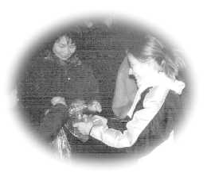 |
Les amis initiés ont essayé de répondre aux besoins des sans abris. |
Dans la soirée du 10 décembre, des initiés se sont rencontrés dans le district d'Holborn de Londres pour distribuer des biscuits, des gants, des chapeaux, des sacs de couchage, des couvertures et des pulls. Lorsque certains frères initiés trouvaient un groupe de sans-abri, ils approchaient avec leurs voitures jusqu'aux sans-abri qui les attendaient sous la pluie battante. Dès que les initiés ont ouvert les coffres des voitures, ils ont été entourés par des gens aux désirs ardents qui tendaient leurs mains nécessiteuses pour attraper toutes sortes de vêtements chauds et de biscuits. Quelques sans-abris ont approché les initiés pour leur communiquer leurs besoins afin que le prochain voyage de distribution soit mieux planifié.
Après l'expérience de la semaine passée, lors de l'excursion suivante, notre groupe était mieux organisé et préparé à répondre aux besoins des sans-abri. Le soutien des amis initiés qui participent aux séances hebdomadaires de méditation de groupe a allégé énormément notre travail. Ceux qui avaient des contraintes familiales et qui ne pouvaient pas aider le soir à la distribution, ont donné des vêtements, des repas chauds et de l'argent. Leur sincérité et désir d'aider étaient très évidents. Grâce aux conseils et aux bénédictions de Maître, tout s'est déroulé en douceur, même la température. De façon ordonnée, des vêtements chauds, des articles de toilette, des biscuits et des fruits ont été distribués. Vers la fin de la soirée, personne n'est reparti affamé. En voyant tous ces gens souriant et heureux qui nous disaient au revoir en nous faisant des signes de la main, nous avons compris que notre présence avait contribué à alléger beaucoup de souffrances et de misère.
| 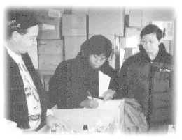 |
Le centre de Montréal a envoyé deux camions à l'accueil Bonneau pour les sans-abri. |
Le 19 décembre 1999, un groupe d'initiés du centre de Montréal a fait parvenir deux camionnettes remplies de nourriture, d'accessoires de toilette, de vêtements, de livrets-échantillons et de revues à l'Accueil Bonneau, une organisation charitable qui s'occupe des besoins spécifiques des pauvres et des sans-abri vivant dans la grande région de Montréal. Le personnel a réservé un accueil chaleureux à nos frères et soeurs. Le 27 décembre 1999, des initiés du centre y sont retournés cette fois-ci, pour servir des repas aux sans-abri.
| 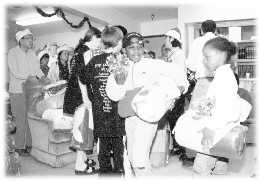 | |
Les enfant sont heureux avec leurs nouveaux jouets et leurs sacs de couchage. 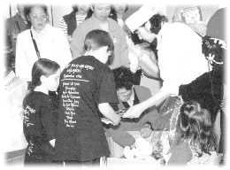
| |
Le 23 décembre, nous avons apporté des paquets pour les sans-abri aux refuges suivants : le "Leesburg Food Bank", l'"Armée du salut", le "Orlando Union Rescue Center", le "Coalition", et le "Sanford Rescue Outreach Mission". Par la suite, nous avons parcouru les rues jusqu'à tard dans la nuit, à la recherche de ceux qui n'avaient pas même la chance d'être abrités dans un refuge, afin de leur distribuer des paquets. Le soir suivant, la veille de Noël, des disciples locaux ont préparé un fantastique festin végétarien qu'ils ont servi à deux des abris pour itinérants. Les salles à manger des gîtes abondaient en cadeaux de Noël et en décorations pour les sans-abri. Il y avait des jouets et des sacs de couchage pour les enfants, ainsi que des trousses de toilettes, des ustensiles, des vêtements d'hiver, et d'autres biens.
| 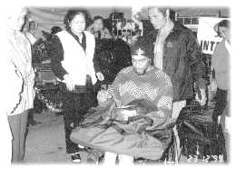 |
" Eh, Nous n'avons jamais eu un aussi beau Noël avant. " |
" Hé, vous êtes extraordinaires ! Je n'ai jamais eu un Noël aussi merveilleux ! " s'est exclamé un vétéran itinérant, après qu'un confrère initié lui ait offert une valise à roulettes ainsi qu'une enveloppe d'argent. De plus, les vétérans sans-abri ont trouvé des tee-shirts et des couvertures dans leurs valises. Des confrères pratiquants ont eu l'idée de donner des valises à roulettes aux sans-abri pour Noël, puisqu'ils parcourent les rues portant leurs humbles effets personnels dans leurs bras ou dans des paniers (chariots) d'épicerie.
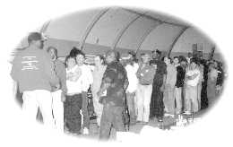 La soirée du 23 décembre a été magnifique quand nous sommes arrivés au gîte local pour les sans-abri sur "Midway Drive". Nous avons dit aux résidents que cette soirée n'avait été possible que grace aux instructions et aux cadeaux d'amour de notre Maître. " Notre Maître se soucie beaucoup des vétérans sans-abri comme vous qui avez mis vos vies en danger pour votre pays. "
Ça et là, quelques vétérans étaient heureux rien qu'à regarder leurs nouveaux cadeaux, tandis que d'autres tentaient dans la lumière tamisée du repère de lire le livret-échantillon "La Clé de l'Illumination Immédiate" ou les revues. D'autres encore parlaient aux initiés aulaciens en aulacien écorché.
Nous avons tiré notre révérence sous des commentaires tels que, " Hé, les amis, c'est fantastique. Ça ne m'est jamais arrivé de toute ma vie ! Merci beaucoup à votre Maître ! "
Le centre de Los Angeles a préparé presque 400 sacs individuels remplis d'articles pour les sans-abri, dont certains ont été donnés directement à des gens vivant dans les rues de la région de Los Angeles. La région d'"Orange County" près de Los Angeles a une très grande population de sans-abri, alors nous sommes aussi allés au "Catholic Worker Soup Kitchen", aux gîtes pour vétérans itinérants, et à l'"Orange Coast Interfaith Shelter"dans "Orange County" afin de partager l'amour de Maître avec les résidents.
Les cadeaux de Maître ont été chaleureusement accueillis par les gens qui étaient enchantés par Sa nature généreuse, et ils se sont informés de notre organisation. C'est avec plaisir que nous leur avons distribué plusieurs exemplaires de la revue Maître Suprême Ching Hai.
| 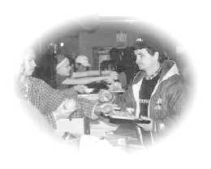 |
Les pratiquants ont servi les personnes démunies avec beaucoup de compassion et de soin. |
Avant Noël, les frères et soeurs d'Ohio se sont réunis pour préparer plus de 300 cadeaux emballés pour les sans-abri de notre région, et sont allés livrer les paquets comme cadeaux de Noël aux refuges. Nous nous sommes aussi engagés à cuisiner pour plus de 200 résidents d'un gîte d'itinérants à Cincinnati comme cadeau du Nouvel An 2000.
Le 9 janvier 2000, quand nous sommes arrivés au gîte pour servir la nourriture, les résidents étaient très heureux de nous voir. Nous avions servi de la nourriture à ce refuge les années précédentes, et une itinérante a embrassé une soeur initiée en disant qu'elle s'était beaucoup ennuyée de notre groupe.
Un frère avait apporté une pleine boîte de revues (#108) au refuge qui ont servi de parfaits cadeaux pour les résidents. À peu près 98% des sans-abri du refuge étaient afro-américains et la couverture de la revue #108, montrant la compassion de Maître pour tout le monde sans discrimination envers les races les a vraiment attirés. Les revues, ainsi que les livrets-échantillons de Maître ont rapidement disparu.
Avec compassion et un grand coeur, nos frères et soeurs et jeunes initiés ont servi aux résidents du gîte leurs aliments préférés.
Chaque itinérant a aussi reçu un paquet surprise. Nous les avons aidés à choisir les cadeaux avec amour, et nous avons tenté d'assortir les couleurs des chapeaux et des gants des paquets avec les couleurs des vêtements que les résidents portaient. Notre visite a égayé les coeurs de tous les gens du refuge, mais nous avons aussi réalisé que nos petits cadeaux n'étaient rien comparativement à l'amour infini de Maître qui a été apporté aux résidents à travers Ses disciples.
À notre départ, les résidents du refuge applaudissaient pour montrer leur appréciation en disant " S'il vous plaît revenez bientôt. " L'atmosphère était remplie d'amour. Nous avons été touchés par l'amour et l'attention de Maître pour les sans-abri qui se sont manifestés à travers notre travail. Maître est comme le soleil qui donne ses rayons de chaleur au monde entier sans discrimination.
| 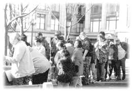 |
Nous remercions Dieu d'avoir quelque chose à partager avec nos frères et soeurs. |
Une fois de plus, cette année, les initiés de Seattle ont témoigné leur amour pour les êtres humains, le jour de l'Action de grâce, en fournissant de la nourriture aux sans-abri de la ville.
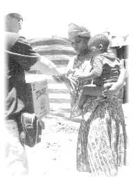 Abuzz avec d'heureux initiés, le centre du Cap a préparé des paquets contenant de la nourriture, des articles de toilette, des vêtements et des couvertures pour les sans-abri. Ces paquets, couronnés de bonbons, de revues et de livrets-échantillons du Maître Suprême Ching Hai, étaient emballés et garnis de rubans et contenaient 100 pains frais pour tous.
Le jour suivant, nous avons d'abord livré les paquets dans un centre de nuit "The Haven" dans le district de Wynberg au Cap. Esme, le directeur de projet du centre, a été enchanté et nous a reçus chaleureusement. Les enfants et les plus âgées se sont rassemblés autour du sapin de Noël au centre et une mère énergique a dansé et chanté avec spontanéité. Une autre femme a reconnu Maître sur l'affiche qui avait été posée au Cap annonçant Sa conférence de 1999. En commentant notre visite, Elle a dit " À la fin c'est toujours le Maître Suprême qui vient. "
Notre deuxième arrêt était un endroit sans adresse (vaguement connu sous le nom de Hlatini). Les initiés ont été très impressionnés par ses bidonvilles, (huttes/maisons) faits de vieux fer blanc et de vieilles planches de bois, son odeur de toilettes de brousse et ses enfants couverts de mouches. Par contre, une dame nous a fait voir sa maison, qui était propre. Son toit était plein de trous, son attitude était gaie et forte. Elle a dit, " Nous souffrons ici, mais je prie Dieu chaque jour. " Après avoir reçu leurs provisions, tous les résidents étaient très contents, en posant devant la caméra, et en demandant des copies des livres de Maître.
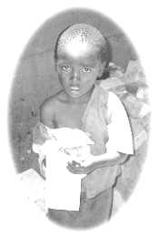 Notre troisième arrêt au Cap était un endroit sous un arbre qui sert de refuge pour les gens de la rue qui sont refusés dans les abris. Un futur gardien nous a prévenus, avec un brillant sifflet rouge qu'il portait autour du cou, que l'endroit était très dangereux. Il a ensuite fait sortir quelques femmes pour qu'elles reçoivent de nos articles. Cela était touchant de voir ces femmes, marquées par les abus physiques et l'alcool, accepter les colis tranquillement un peu étonnées.
| 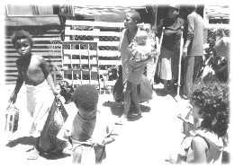 |
Les Africains du Sud sont très touchés par le grand amour de Maître. |
Ensuite, nous sommes allés dans les grands cantons de Nyanga. Une fois de plus, les initiés ont organisé, dans les environs, une conférence vidéo de Maître. Une souriante résidente locale, Pumela, a dit qu'elle savait que des gens heureux viendraient dans la région pour Noël, et elle se demandait comment cela pourrait se passer et comment elle pourrait les aider.
Finalement, nous avons laissé des couvertures et de la nourriture a une personne qui s'occupait du stationnement et qui avait de tout coeur surveillé la voiture de Maître au Cap pendant Sa tournée de conférences. Sa famille vivait dans les rues, mais il a dit qu'il espérait trouver une maison " Alors ses enfants pourraient grandir convenablement. " Il a aussi dit qu'il croyait que Maître était merveilleuse, et il a embrassé Sa photo, en Lui exprimant son amour et sa gratitude.
| 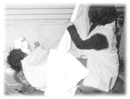 |
Une soeur a enveloppé gentiment une personne sans-abri dans une couverture de laine. |
Un jour avant Noël, des initiés ont apporté, aux sans-abri vivant dans les rues de San Jose, de la nourriture, des boissons gazeuses, des repas végétariens et des sacs contenant des chemises, des pantalons, des chaussures, des chaussettes et des couvertures de laine. La plupart des gens de rue n'ont pour dormir la nuit qu'une boîte de carton comme abris.
Le 18 décembre un téléthon a été organisé par un groupe local, Club 20-30, pour amasser des fonds pour les enfants affamés. Club 20-30 est un organisme à but non lucratif qui est composé de jeunes hommes âgées de 20 à 30 ans qui concentrent leurs efforts à aider les gens dans le besoin de plusieurs façons. Cette année, le groupe a déployé ses efforts à aider les enfants mal nourris, parce que la mal nutrition au Panama est un problème très sérieux. Les membres de l'Association internationale du Maître Suprême Ching Hai a fourni 5 327,00 $US aux gens responsables d'une émission de télévision locale, qui ont été enchantés de notre aide. Le 24 décembre 1999, nous sommes aussi allés dans un village dirigé par l'ordre de Mère Térésa pour leur apporter de la nourriture et des vêtements.
| 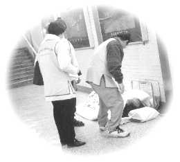 |
Couverts dans leurs nouvelles couvertures, les sans-abri se sentaient bien au chaud. |
Les pratiquants de Formose ont donné de l'argent aux pauvres et ont rendu visite aux sans abri vivant près des passages sous les stations de chemins de fer, dans les corridors et les escaliers des stades, dans les pavillons des parcs, au-dessous des ponts, et à l'extérieur des temples, espérant sincèrement les réchauffer avec des vêtements d'hiver, tout en réconfortant leurs âmes avec l'amour de Maître. Tard dans la nuit, alors que plusieurs sans-abri dormaient déjà, des amis initiés les ont silencieusement couverts avec des édredons. Cette activité "Réchauffons les coeurs en hiver" pour les pauvres et les sans-abri à Formose a coûté 499 037$NT (environ 16 098$ US).
| 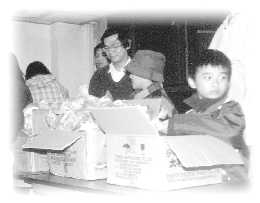 |
Les amis pratiquants de Hong Kong s'occupent des gens rejetés par la société. |
Un front froid a balayé Hong Kong quelques jours avant Noël et le Nouvel an. En suivant les instructions de Maître, les pratiquants ont promptement organisé une opération d'amour pendant 3 jours, prenant soin des sans-abri. Ils ont emporté avec eux de nouveaux vêtements d'hiver, des bas, des bonbons, des biscuits. Ils se sont dispersés dans les rues des vieux quartiers, visitant les tunnels et les ponts pour y chercher des personnes âgés, des nouveaux immigrants et des jeunes drogués qui vivaient dans des boîtes de carton afin de se procurer un peu de chaleur. Quelques-uns parmi nous sont allés dans des maisons de transition pour les gens qui ont des handicaps mentaux. Recevant de l'aide de différents organismes de services sociaux, nous avons distribué des effets personnels à plusieurs personnes dans le besoin, incluant les nouveaux immigrants, les gens à faible revenu. Des dictionnaires anglais-chinois ont aussi été distribués à des étudiants dans le besoin. Plus tard, avec l'aide de la société communautaire, nous sommes allés dans des abris très froids pour les prisonniers relâchés et les drogués et dans des refuges qui accueillent les célibataires et les pauvres. Et aussi nous avons rendu visite à des gens qui vivent dans la rue derrière les gradins dans un stade de football pour apporter l'amour de Maître et Son intérêt pour ceux qui sont souvent négligés par la société.
| 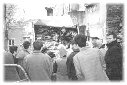 |
Merci à Allah de nous envoyer un si beau cadeau pendant des moments si difficiles. |
Après avoir reçu les consignes de Maître, nous avons commencé à acheter des vivres tôt le lendemain matin. Après avoir entendu parler de la bonté de notre Maître bien-aimée, plusieurs propriétaires de magasins ont descendu leurs prix et nous ont fait de très bonnes propositions. Parmi les magasins qui vendaient des couvertures et de la nourriture, plusieurs nous ont offert de venir livrer la marchandise assez rapidement. Ils sont même venus livrer eux-mêmes la marchandise car c'était un jour du Ramadan. Pendant cette période, les Turcs prennent un mois complet d'arrêt de travail pour se reposer et prier Dieu. Mais, comme ils ont entendu parler des bonnes intentions de Maître, ils ont été touchés et se sont portés volontaires pour nous aider, autant que nous en avions besoin. Après la période de repos et de prière qui se terminait à 17 heures, plusieurs personnes, pas seulement nos amis initiés et pratiquants, mais aussi les voisins et amis sont, tout d'un coup, venus nous aider. Nous avons travaillé jusqu'à 2 heures du matin. Des familles complètes pères, mères et enfants courant, travaillant très efficacement.
Le deuxième jour, nous nous sommes divisés en deux groupes, certaines personnes emballaient et d'autres transportaient des boîtes dans des camions. La première destination était Istanbul, où seulement quelques hommes traînaient dans les rues. Mais après qu'ils aient reçu leurs paquets, une file d'attente s'est tout d'un coup formée. Ils étaient tous très curieux de savoir qui était la personne qui leur offrait un si beau cadeau dans ces temps si difficiles. Ils se sont réjouis de tenir et d'examiner leurs paquets ; la joie se voyait sur leurs visages.
Après le premier arrêt, nous avons rechargé le camion et avons continué. Comme avant, les gens sont venus en grand nombre, se hâtant et se bousculant pour recevoir leur cadeau, en oubliant la pluie. De grands sourires étaient accrochés à leurs visages. Ils ont tous répété " Merci Allah. " Les amis pratiquants ont aussi emporté des paquets pour les gens dans le besoin. Après avoir visité trois endroits différents, et avec quelques paquets restants, nous sommes finalement retournés chez nous. Sur le chemin nous avons rencontré des sans-abri qui mendiaient à des passants. Quand nous leur avons remis les paquets, ils ont été très surpris ! Ils nous ont regardé sans dire un mot, mais leurs yeux scintillaient de gratitude.